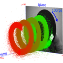

jAER / Install Guide

Install Guide
Production installers bundle Eclipse Temurin JDK 25. You do not install Java yourself. Download from jaerproject.org or GitHub Releases.
Windows
Download jAER_windows-x64_*.exe and run it. Current builds are Authenticode-signed (publisher Tobias Delbruck).
- SmartScreen may still say Windows protected your PC until the signature has enough downloads. Use More info → Run anyway.
- If Smart App Control blocks the launcher, allow the app or turn that feature off.
wingetcan install the signed build even while SmartScreen still warns.
USB cameras
- If jAER reports
LIBUSB_ERROR_NOT_SUPPORTED, bind WinUSB with Zadig (not libusb-win32). - Prophesee EVK4 can use Prophesee wdi-simple.
macOS
Pick the DMG that matches the Mac, not the browser. Safari often cannot report Apple Silicon vs Intel.
- Apple menu → About This Mac: Chip Apple M1–M4 →
jAER_macos_aarch64_*.dmg. - Processor Intel →
jAER_macos_*.dmg(noaarch64in the name). - Terminal:
uname -misarm64orx86_64.
An Apple Silicon DMG on an Intel Mac fails with You can’t open the application “jAER … Installer” because this application is not supported on this Mac. Download the Intel DMG instead.
Install
- Double-click the
.dmg(it mounts a disk). - In the Finder window, double-click jAER … Installer.
- Prefer a user folder (
~/Applicationsor~/jaer) unless you want an admin install into/Applications.
Current DMGs are signed with Apple Developer ID and notarized (identified developer Tobias Delbruck). A notarized GitHub DMG should open normally. An older unsigned DMG needs right-click → Open or Privacy & Security → Open Anyway.
USB cameras (Apple Silicon)
Live USB cameras need Homebrew libusb:
brew install libusbIf the dylib is missing, jAER shows a how-to and quits so the next launch can load it. File playback does not need libusb.
Startup logs
If the splash closes with no window, attach $TMPDIR/jaer/jAER-0.log.
$TMPDIR is not /tmp; it looks like /var/folders/…/T/.
Absence of hs_err_pid*.log or Console crash reports usually means a normal Java exit, not a native crash.
Linux
Download jAER_unix_*.sh. Installers are x64 only.
chmod +x jAER_unix_*.sh
sh jAER_unix_*.shStart jAER from the install directory or the desktop / GNOME entry the installer created. There is no official apt / .deb (USB cameras need an unsandboxed install).
If USB udev rules are missing for a plugged-in jAER device, jAER shows the exact shell command to add the rule(s).
After install
- Installers can download sample recordings (off by default, about 1 GB). You can fetch them later from Help → Sample data. Skipping that download does not roll back the install.
- After this version is GitHub Latest, Help → Check for release updates… → Download and install can self-update.
- Video: installing and updating jAER (also covers
git cloneand rebuild from master).